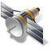

Lat,Lng:
注記：このページは、技術のプレビューのために提供されています。本ページ作成者は、表示された各レイヤの情報を利用した結果生じたいかなる損害についても、一切の責任を負いません。
View Source


 注記：このページは、技術のプレビューのために提供されています。本ページ作成者は、表示された各レイヤの情報を利用した結果生じたいかなる損害についても、一切の責任を負いません。 View Source
注記：このページは、技術のプレビューのために提供されています。本ページ作成者は、表示された各レイヤの情報を利用した結果生じたいかなる損害についても、一切の責任を負いません。 View Source